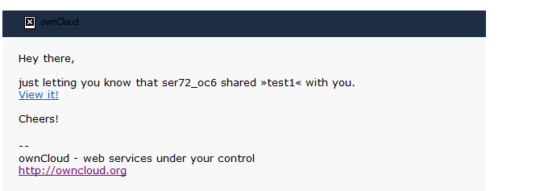
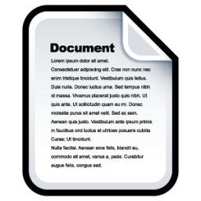
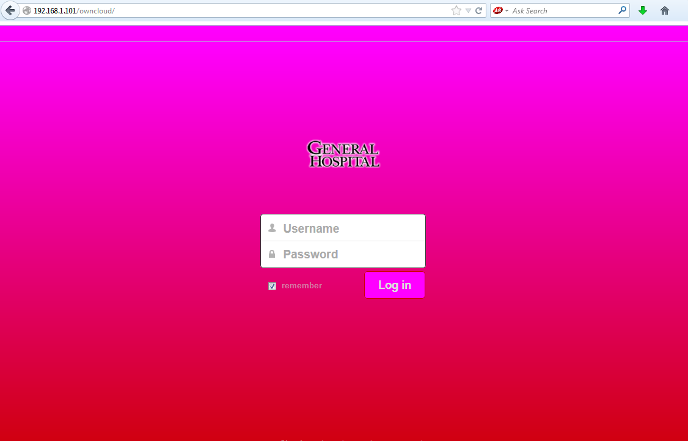
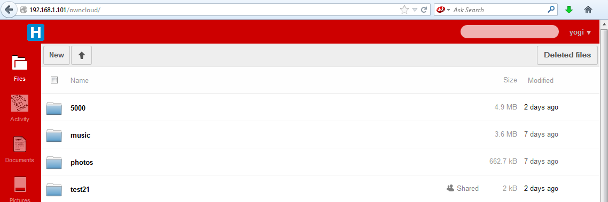
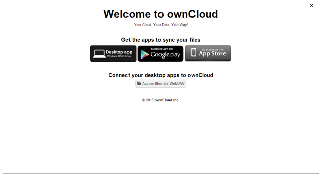
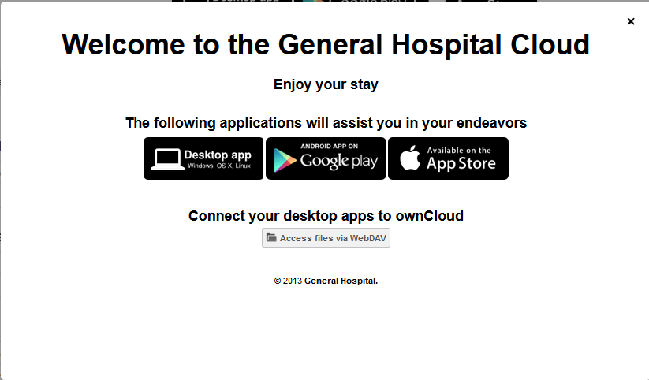

Theming ownCloud¶
ownCloud supports themes, so you can customize its look without editing source code. This document covers the basic steps of theming, and then walks through a basic theming example.
Configuration¶
The themes directory (usually owncloud/themes) contains all theming
files. A default ownCloud installation comes with a helpful README in this directory. To
add a new theme, copy a directory containing your themes files in this directory. The
directory name is the theme name, and you configure ownCloud to use this theme by linking
it in config.php with the theme directive:
'theme' => 'themename',
Note
When you upgrade ownCloud custom themes are disabled, as custom themes can sometimes break the upgrade routine. You must re-enable your custom theme after the upgrade is complete by re-entering your theme name in config.php.
This theme overrides any Javascript files, images, templates and CSS files in other
locations. Your directory structure should be the same as in owncloud/core/:
themename/
core/
css
img
js
Never edit the core template files– always use owncloud/themes for customizations.
Errors in theme files can break ownCloud, so you can always revert to the default theme
while you fix your custom theme.
It is possible for a theme to break between major ownCloud releases, as there may be changes to the ownCloud file structure. This can easily be resolved by examining the path to the file being replaced and mirror that path within the themes directory structure.
Customize the logo¶
Customized logos go in the themes/core/img directory. You can adapt the following example code, which goes in themes/themename/core/css/header.css, to display your customized logos:
#header .logo {
background-image: url(../img/logo.svg);
background-repeat: no-repeat;
width: 252px;
height: 120px;
margin: 0 auto;
}
#header .logo-wide {
background-image: url(../img/logo-wide.svg);
background-repeat: no-repeat;
width: 150px;
height: 34px;
}
#header .logo-icon {
/* display logo so appname can be shown next to it */
display: inline-block;
background-image: url(../img/logo-icon.svg);
background-repeat: no-repeat;
width: 62px;
height: 34px;
}
Changing Colors¶
The color scheme is stored in the styles.css file within the
owncloud/core/css folder.
To change the color of the header bars, copy the core/css/styles.css
to themes/<themename>/core/css/styles.css and edit.
This example shows a section in styles.css that configures colors. There are several
locations within this file that assign colors to various page elements.
#body-login {
text-align: center;
background: #1d2d44; /* Old browsers */
background: url('../img/noise.png'), -moz-linear-gradient(top, #35537a 0%, #1d2d44 100%); /* FF3.6+ */
background: url('../img/noise.png'), -webkit-gradient(linear, left top, left bottom, color-stop(0%,#35537a), color-stop(100%,#1d2d44)); /* Chrome,Safari4+ */
background: url('../img/noise.png'), -webkit-linear-gradient(top, #35537a 0%,#1d2d44 100%); /* Chrome10+,Safari5.1+ */
background: url('../img/noise.png'), -o-linear-gradient(top, #35537a 0%,#1d2d44 100%); /* Opera11.10+ */
background: url('../img/noise.png'), -ms-linear-gradient(top, #35537a 0%,#1d2d44 100%); /* IE10+ */
background: url('../img/noise.png'), linear-gradient(top, #35537a 0%,#1d2d44 100%); /* W3C */
filter: progid:DXImageTransform.Microsoft.gradient( startColorstr='#35537a', endColorstr='#1d2d44',GradientType=0 ); /* IE6-9 */
}
Theming emails¶
Your ownCloud server can send notification and password reset emails, like this notification of a new file share:
{kind=link}
Email templates are stored in owncloud/core/templates/
and may be modified by copying them to owncloud/themes/core/templates/mail.php, and
then customizing the copies. You may also edit email templates in the graphical template
editor on your ownCloud Admin page.
Theming Example¶
General Hospital wants their own custom ownCloud theme, with custom logos and colors. Here is a step by step guide of how to build this theme.
Establishing a Directory Structure¶
Avoid spaces in your custom theme names:
themes/GeneralHospital
Next, create the directories for images and style sheets:
themes/GeneralHospital/core/img
themes/GeneralHospital/core/css
Splash Screen Logo¶
This is the new logo for the login splash screen. It must be a 252x122 pixel SVG file:
The file must be named logo.svg and placed in the image folder:
themes/GeneralHospital/core/img/logo.svg
Top Left Logo¶
This is the new custom logo for the top left of the ownCloud navigation frame:
It must be an SVG file at 142x32 pixels, named logo-wide.svg. You can alter the
width, but the height is fixed. This file also goes in the
themes/GeneralHospital/core/img/ folder.
Modifying Colors¶
The color definitions are stored in core/css/styles.css.
The first step is to copy this file to themes/GeneralHospital/core/css/styles.css.
As stated in section Changing colors, edit the colors as desired in this section:
#body-login {
text-align: center;
background: #1d2d44; /* Old browsers */
background: url('../img/noise.png'), -moz-linear-gradient(top, #35537a 0%, #1d2d44 100%); /* FF3.6+ */
background: url('../img/noise.png'), -webkit-gradient(linear, left top, left bottom, color-stop(0%,#35537a), color-stop(100%,#1d2d44)); /* Chrome,Safari4+ */
background: url('../img/noise.png'), -webkit-linear-gradient(top, #35537a 0%,#1d2d44 100%); /* Chrome10+,Safari5.1+ */
background: url('../img/noise.png'), -o-linear-gradient(top, #35537a 0%,#1d2d44 100%); /* Opera11.10+ */
background: url('../img/noise.png'), -ms-linear-gradient(top, #35537a 0%,#1d2d44 100%); /* IE10+ */
background: url('../img/noise.png'), linear-gradient(top, #35537a 0%,#1d2d44 100%); /* W3C */
filter: progid:DXImageTransform.Microsoft.gradient( startColorstr='#35537a', endColorstr='#1d2d44',GradientType=0 ); /* IE6-9 */
}
This section of code handles the headers for many different browser types.
The default colors in the above example are #33537a (light blue) and
#1d2d42 (dark blue). Some older browsers have only one color, however,
most support gradients.
The login page background is a horizontal gradient. The hex #33537a
is the top color of the gradient at the login screen. The #1d2d42
is the bottom color of the gradient at the login screen.
To change the colors, modify these entries with the desired hex color code.
Changing Application icons¶
App icons can be modified as well. App icons are in the owncloud/apps/<app>/img
folder. Similarly, the modified icon should reside in the
owncloud/themes/<themename>/apps/<app>/img folder.
General Hospital would like to modify the activity icon with the following image:
And the Documents icon with the following:
These must be converted to SVG format and placed in these locations:
owncloud/themes/GeneralHospital/apps/activity/img/activity.svg
owncloud/themes/GeneralHospital/apps/documents/img/documents.svg
Results¶
After saving all files and refreshing the Web browser, you can see the new theme:
 {kind=link}
{kind=link}
Theming the First Run Wizard¶
The ownCloud First Run Wizard is a welcome screen which appears when a user logs into your ownCloud server for the first time, and users can re-run anytime from their Personal pages. (See :doc: ../installation/installation-wizard)
You may customize the welcome screen. This is the default:
{kind=link}
The base file containing the welcome window configuration is
apps/firstwunwizard/templates/wizard.php. Copy this file to your custom
themes directory. (Make sure the config.php file has been updated to
point to your themes directory.)
The wizard.php file performs checks to verify whether the community or
enterprise edition of ownCloud is running. The welcome screen is slightly
different in the two instances.
As an enterprise customer, all modifications to the wizard.php file should be in the
“Else” section of the following condition statements:
<?php if (OC_Util::getEditEditionString() === ''): ?>
...
<?php else: ?>
...
<?php endif; ?>
General Hospital wants to modify the welcome window, so modify wizard.php to apply the appropriate customizations. In this example several instances of ownCloud are replaced with General Hospital.
<div id="firstrunwizard">
<a id="closeWizard" class="close">
<img class="svg" src="<?php print_unescaped(OCP\Util::imagePath('core', 'actions/close.svg')); ?>">
</a>
<h1><?php p($l->t('Welcome to the General Hospital Cloud', array($theme->getTitle()))); ?></h1>
<?php if (OC_Util::getEditionString() === ''): ?>
<p><?php p($l->t('Your personal web services. All your files, contacts, calendar and more, in one place.'));?></p>
<?php else: ?>
<h2><?php p($1->t('Enjoy your stay'));?></h2>
<?php endif; ?>
<h2><?php p($l->t('Get the apps to sync your files'));?></h2>
<a target="_blank" href="<?php p($_['clients']['desktop']); ?>">
<img src="<?php print_unescaped(OCP\Util::imagePath('core', 'desktopapp.png')); ?>" />
</a>
<a target="_blank" href="<?php p($_['clients']['android']); ?>">
<img src="<?php print_unescaped(OCP\Util::imagePath('core', 'googleplay.png')); ?>" />
</a>
<a target="_blank" href="<?php p($_['clients']['ios']); ?>">
<img src="<?php print_unescaped(OCP\Util::imagePath('core', 'appstore.png')); ?>" />
</a>
<?php if (OC_Util::getEditionString() === ''): ?>
<h2><?php p($l->t('Connect your desktop apps to %s', array($theme->getName()))); ?></h2>
<a target="_blank" class="button" href="<?php p(link_to_docs('user-sync-calendars')) ?>">
<img class="appsmall appsmall-calendar svg" src="<?php print_unescaped(OCP\Util::imagePath('core', 'places/calendar-dark.svg')); ?>" /> <?php p($l->t('Connect your Calendar'));?>
</a>
<a target="_blank" class="button" href="<?php p(link_to_docs('user-sync-contacts')) ?>">
<img class="appsmall appsmall-contacts svg" src="<?php print_unescaped(OCP\Util::imagePath('core', 'places/contacts-dark.svg')); ?>" /> <?php p($l->t('Connect your Contacts'));?>
</a>
<a target="_blank" class="button" href="<?php p(link_to_docs('user-webdav')); ?>">
<img class="appsmall svg" src="<?php print_unescaped(OCP\Util::imagePath('core', 'places/folder.svg')); ?>" /> <?php p($l->t('Access files via WebDAV'));?>
</a>
<?php else: ?>
<br><br><br>
<a target="_blank" class="button" href="<?php p(link_to_docs('user-manual')); ?>">
<img class="appsmall svg" src="<?php print_unescaped(OCP\Util::imagePath('settings', 'help.svg')); ?>" /> <?php p($l->t('Documentation'));?>
</a>
<a target="_blank" class="button" href="<?php p(link_to_docs('user-webdav')); ?>">
<img class="appsmall svg" src="<?php print_unescaped(OCP\Util::imagePath('core', 'places/folder.svg')); ?>" /> <?php p($l->t('Access files via WebDAV'));?>
</a>
<?php endif; ?>
<p class="footnote">
<?php if (OC_Util::getEditionString() === ''): ?>
<?php print_unescaped($l->t('There’s more information in the <a target="_blank" href="%s">documentation</a> and on our <a target="_blank" href="http://owncloud.org">website</a>.', array(link_to_docs('user_manual')))); ?><br>
<?php print_unescaped($l->t('If you like ownCloud,
<a href="mailto:?subject=ownCloud
&body=ownCloud is a great open software to sync and share your files.
You can freely get it from http://owncloud.org">
recommend it to your friends</a>
and <a href="http://owncloud.org/promote"
target="_blank">spread the word</a>!')); ?>
<?php else: ?>
© 2014 <a href="https://owncloud.com" target="_blank">General Hospital.</a>
<?php endif; ?>
</p>
</div>
The resulting welcome window looks like this:
{kind=link}